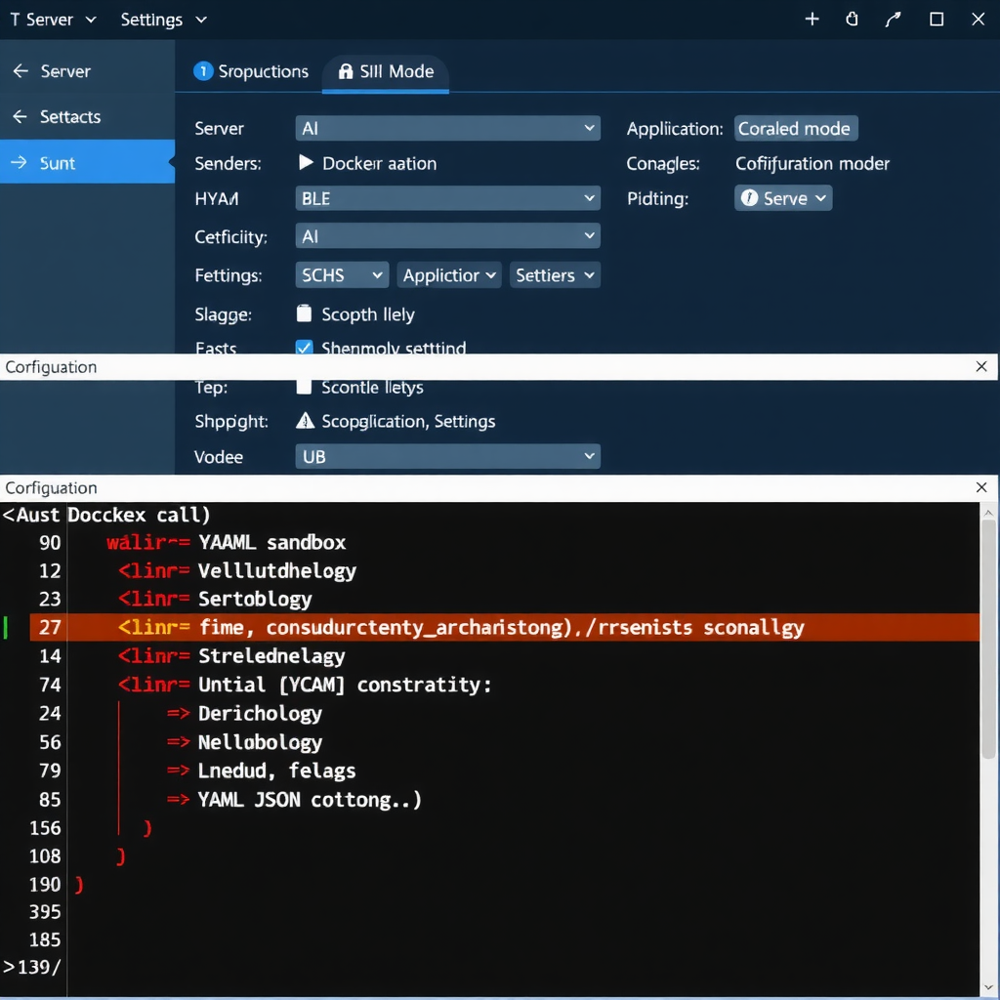

前言
今天是个平常的周六下午，我让 AI 助手帮我处理一个任务。好家伙，它竟然报错了：
Failed to inspect sandbox image: failed to connect to the docker API什么情况？我的 AI 助手一直运行得好好的，怎么突然就连不上 Docker 了？更奇怪的是，我压根没让它用 Docker 啊！
这篇文章记录了这次故障的完整排查过程，希望能帮到遇到类似问题的朋友。
问题发现
故障现象
当天下午，我向 AI 助手发送了一个处理任务的请求。正常情况下，它应该：
- 访问网络资源
- 提取需要的数据
- 保存到本地
但这次，它返回了一串错误：
⚠️ Agent failed before reply: Failed to inspect sandbox image随后我尝试直接在沙箱内执行命令，发现整个环境都是只读的：
mount0 on /workspace type virtiofs (ro,relatime)
overlay on / type overlay (ro,relatime)沙箱内没有 curl、wget、python 等基本工具，连 /workspace 目录都是只读挂载。
第一反应
我首先想到的是：
- 飞书插件昨天刚更新，是不是插件导致的问题？
- Colima/Docker 服务没启动？
但经过排查，飞书插件加载正常，Colima 也在运行中。问题似乎更深层。
深入排查
检查运行时信息
我让 AI 助手查看自己的运行状态：
Runtime: docker/all⚠️ 关键发现
Runtime 显示为 docker/all，而不是之前的 direct（host 模式）。这说明 AI 助手当前运行在 Docker 容器内，而不是直接在主机上。
配置文件对比
检查配置备份文件，发现了关键变化：
| 时间 | 配置文件 | sandbox 配置 |
|---|---|---|
| 3月6日 20:48 | bak.4 | 无 sandbox 字段 |
| 3月6日 21:20 | bak.3 | 无 sandbox 字段 |
| 3月7日 12:24 | bak.2 | sandbox.mode: "all" |
| 3月7日 12:43 | 当前配置 | sandbox.mode: "all" |
配置在 3 月 7 日 12:24 被修改了！谁干的？
追踪真凶
进一步查看配置审计日志：
wizard.lastRunAt: "2026-03-07T04:24:58.443Z" (UTC)
= 2026-03-07 12:24:58 (北京时间)
wizard.lastRunCommand: "doctor"🔍 真相大白
openclaw doctor --fix 命令在 3 月 7 日 12:24 执行，自动添加了 sandbox.mode: "all" 配置。

配置文件对比，清晰显示 sandbox 配置的变化
Host 模式 vs Docker 模式对比
为了更好地理解问题，我们来对比一下两种运行模式：
🏠 Host 模式（direct）
| 运行方式 | 直接在主机系统上执行命令 |
| 文件访问 | ✅ 完全访问主机文件系统 |
| 网络访问 | ✅ 直接使用主机网络 |
| 工具可用性 | ✅ 使用主机安装的所有工具 |
| 性能 | ✅ 无虚拟化开销，性能最优 |
| 安全性 | ⚠️ 较低，命令直接影响主机 |
| 适用场景 | 个人开发、可信环境 |
🐳 Docker 模式（sandbox）
| 运行方式 | 在 Docker 容器内隔离执行 |
| 文件访问 | 🔒 仅访问挂载的目录，默认只读 |
| 网络访问 | 🔒 容器网络，需要特殊配置 |
| 工具可用性 | ❌ 仅使用容器内预装工具 |
| 性能 | ⚠️ 有虚拟化开销，略有延迟 |
| 安全性 | ✅ 较高，命令隔离在容器内 |
| 适用场景 | 生产环境、多用户、不信任场景 |
Docker 容器架构示意图，展示隔离层的作用
配置选项
OpenClaw 的 sandbox.mode 支持三个值：
# 关闭沙箱 = host 模式（推荐个人使用）
openclaw config set agents.defaults.sandbox.mode off
# 只有子会话用沙箱
openclaw config set agents.defaults.sandbox.mode non-main
# 所有会话都用沙箱
openclaw config set agents.defaults.sandbox.mode all问题解决
知道了问题所在，解决方案就很简单了：
# 切换回 host 模式
openclaw config set agents.defaults.sandbox.mode off
# 重启 Gateway 使配置生效
openclaw gateway restart执行后验证：
Runtime: direct ✅✅ AI 助手恢复正常！
故障处理经验总结
1. 问题诊断方法论
发现问题 → 查看错误日志 → 检查运行状态 → 对比配置变化 → 定位根因 → 解决问题关键步骤：
- 保留配置备份：这次能快速定位问题，得益于 OpenClaw 自动保存的配置备份文件
- 查看时间线：通过文件修改时间，精确定位配置变更的时间点
- 审计日志：
wizard.lastRunCommand记录了触发变更的命令
2. 安全配置的"双刃剑"
openclaw doctor --fix 是一个很有用的诊断修复命令，但它可能会：
- 自动修改安全配置（如 sandbox 模式）
- 根据当前系统状态做出判断（Docker 可用时启用沙箱）
- 在用户不知情的情况下改变行为
💡 建议
- 执行
doctor --fix后，检查配置变更 - 使用
openclaw config get查看当前配置 - 理解每个配置项的含义
3. Docker 依赖检查
如果使用 Docker 模式，需要确保：
# 检查 Docker 服务
docker ps
# 检查 Colima（macOS）
colima status
# 检查 Docker Socket
ls -la /var/run/docker.sock4. 配置文件位置
OpenClaw 的配置文件位于：
~/.openclaw/openclaw.json # 主配置
~/.openclaw/openclaw.json.bak.N # 自动备份
~/.openclaw/agents/main/ # Agent 配置重要配置项：
agents.defaults.sandbox.mode：沙箱模式gateway.trustedProxies：代理信任设置channels.*：各渠道配置
5. 快速排查清单
-
openclaw status --deep：查看运行状态 -
openclaw config get：检查当前配置 -
cat ~/.openclaw/openclaw.json：查看配置文件 -
ls -la ~/.openclaw/*.bak*：查看配置备份 -
docker ps：检查 Docker 服务 - 检查最近执行的命令历史
6. 记住这些命令
# 查看 Gateway 状态
openclaw gateway status
# 查看配置
openclaw config get
# 修改配置
openclaw config set <path> <value>
# 重启 Gateway
openclaw gateway restart
# 查看配置文件位置
openclaw config file
# 查看帮助
openclaw config --help写在最后
这次故障虽然花了一些时间排查，但也让我对 OpenClaw 的运行机制有了更深入的理解。
关键教训：安全工具的自动修复功能可能会改变你的配置，执行后务必检查变更。
希望这篇文章能帮到遇到类似问题的朋友。如果有其他问题，欢迎在评论区讨论。